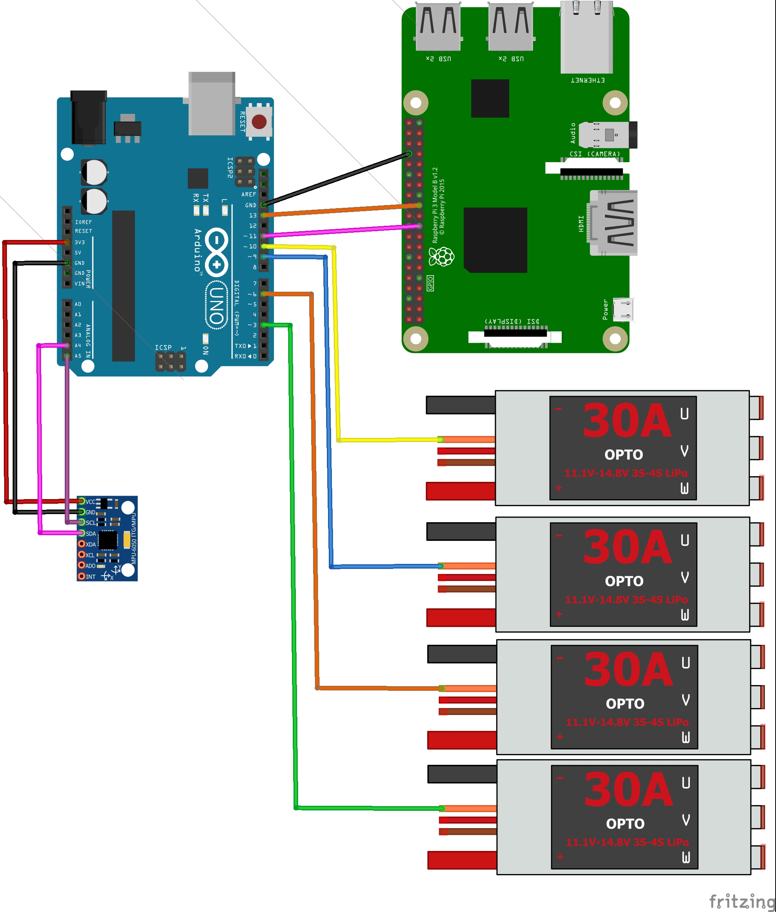

Face Tracking Drone


Goal
Create an autonomous drone that can detect and follow human faces.
Timeline
June 2017 - Present (Waiting on parts. Flight test soon)
Overview
Code for this project is here.
After I decided to build a drone from scratch using an Arduino UNO as the flight controller, I decided to take on a bit more of a challenge. I used a Raspberry Pi with OpenCV for the computer vision component of the project. I used SPI communication to interface the Raspberry Pi and the Arduino. The Raspberry Pi detects and tracks faces and sends the position to the Arduino via the SPI protocol. Based on the position of the face in the frame, the drone is sent commands to move so as to place the face in the middle of the image frame.
Technologies Used
Wiring Diagram
| Arduino Pin | Corresponding Pin |
|---|---|
| 11 (MOSI) | RPI 19 (MOSI) |
| 13 (SCLK) | RPI 23 (SCLK) |
| 6 | Front Left ESC |
| 5 | Front Right ESC |
| 3 | Back Left ESC |
| 9 | Back Right ESC |
| A4 | MPU6050 SDA ESC |
| A5 | MPU6050 SCL |
| 2 | PPM Input from receiver |